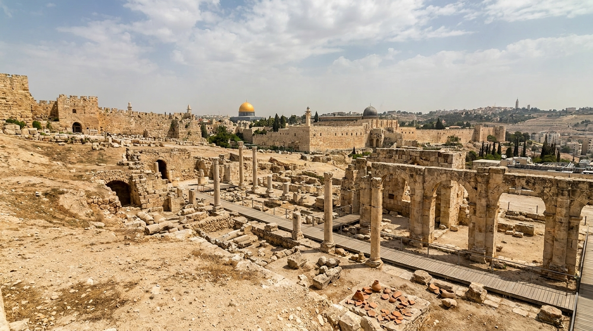
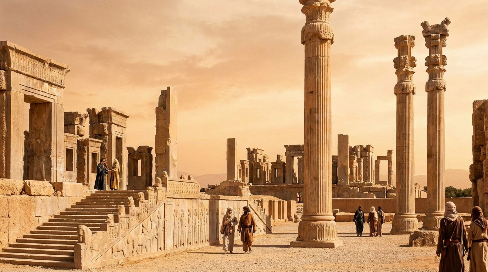
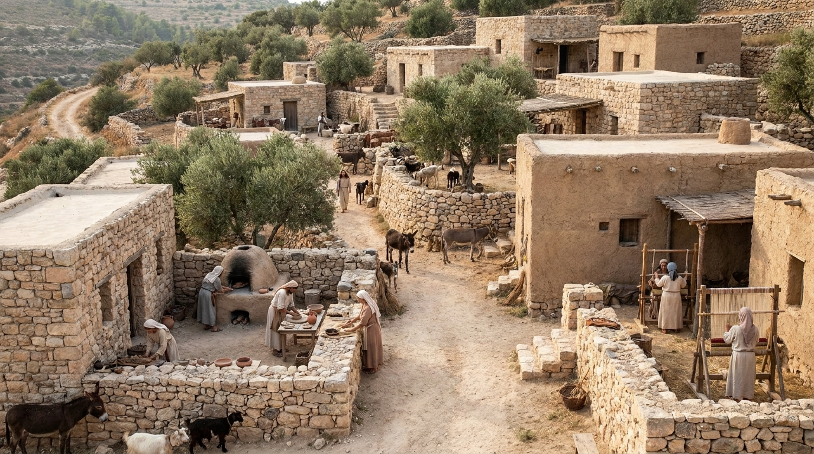
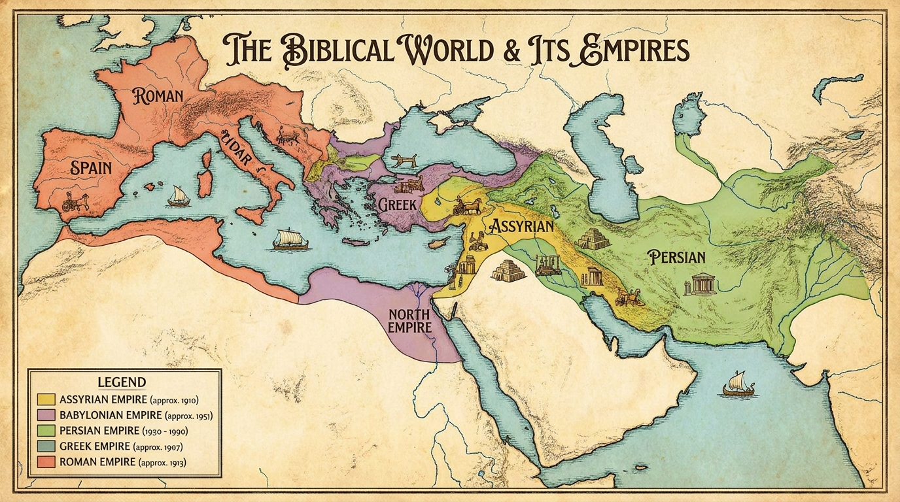
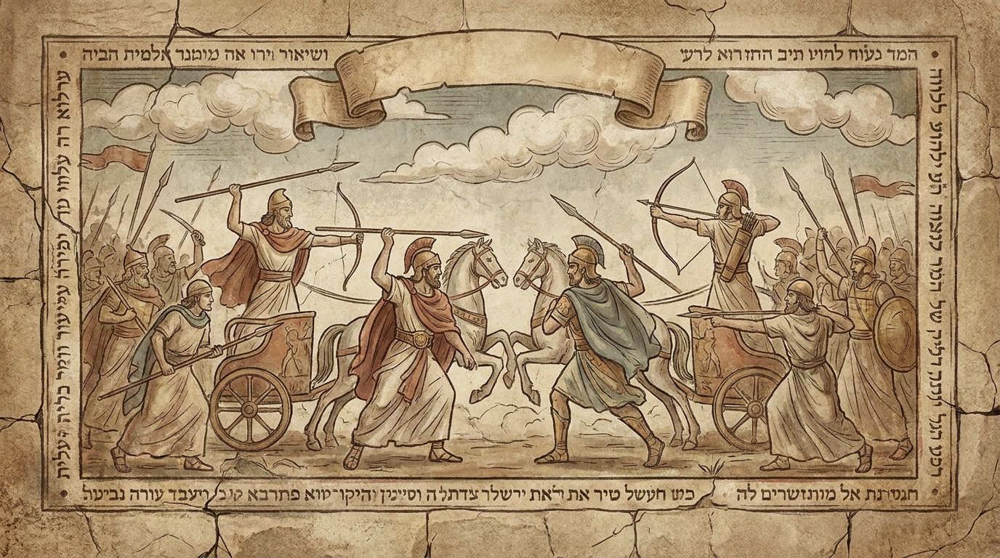
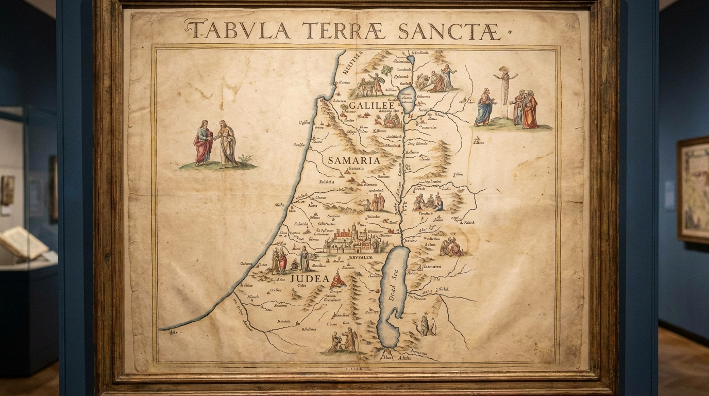
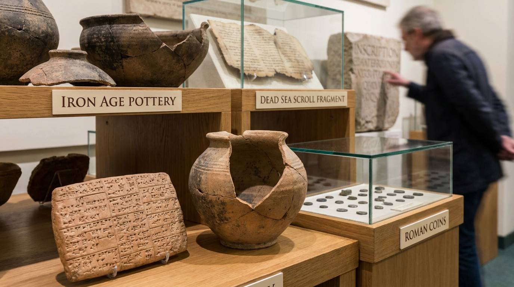

O Mundo da Bíblia
A Bíblia foi escrita ao longo de aproximadamente 1.500 anos, em diferentes regiões, culturas e períodos históricos. Conhecer esse cenário ajuda a compreender melhor os acontecimentos registrados nas Escrituras e o propósito de cada livro.
Neste estudo:
🏺 Os Grandes Impérios

Diversos impérios exerceram influência direta sobre o povo de Israel. Egípcios, Assírios, Babilônios, Persas, Gregos e Romanos moldaram acontecimentos que aparecem em praticamente toda a narrativa bíblica.
Cada domínio trouxe mudanças políticas, culturais, religiosas e sociais, deixando marcas profundas na história do povo de Deus.
👑 Reis e Governantes
Faraó, Nabucodonosor, Ciro, Alexandre, Herodes, César Augusto e Pôncio Pilatos são alguns dos governantes que marcaram profundamente a história registrada nas Escrituras.
🏘️ A Vida Cotidiana

Como eram as casas? O que as pessoas comiam? Como funcionavam os casamentos, o comércio, a agricultura e as profissões? Conhecer esses detalhes aproxima o leitor da realidade vivida pelos personagens bíblicos.
🗺️ Geografia Política

Rios, desertos, montanhas e cidades exerceram papel fundamental na história bíblica. A localização geográfica explica viagens missionárias, batalhas, rotas comerciais e o crescimento das nações.
⚔️ Guerras Importantes

Desde a conquista de Canaã até o domínio romano, diversos conflitos marcaram a história do povo de Israel e ajudam a compreender inúmeras passagens das Escrituras.
📜 Linha do Tempo

Uma visão cronológica dos principais acontecimentos bíblicos, desde a criação até a Igreja Primitiva.
📚 Curiosidades Históricas

Descobertas arqueológicas, inscrições, moedas, pergaminhos e monumentos ajudam a compreender melhor o cenário histórico das Escrituras.
✅ Resumo
Estudar o contexto histórico amplia a compreensão da Palavra de Deus e permite enxergar os acontecimentos bíblicos dentro da realidade em que ocorreram.
Continue sua jornada:
- Próximo Tema ➡️ Geografia Bíblica
- Temas 📚 Ver todos os estudos
Apoie este projeto 🌱
Se este estudo foi útil, considere apoiar a manutenção do site.
Chave PIX (Celular):
marcosmontanari2@gmail.com